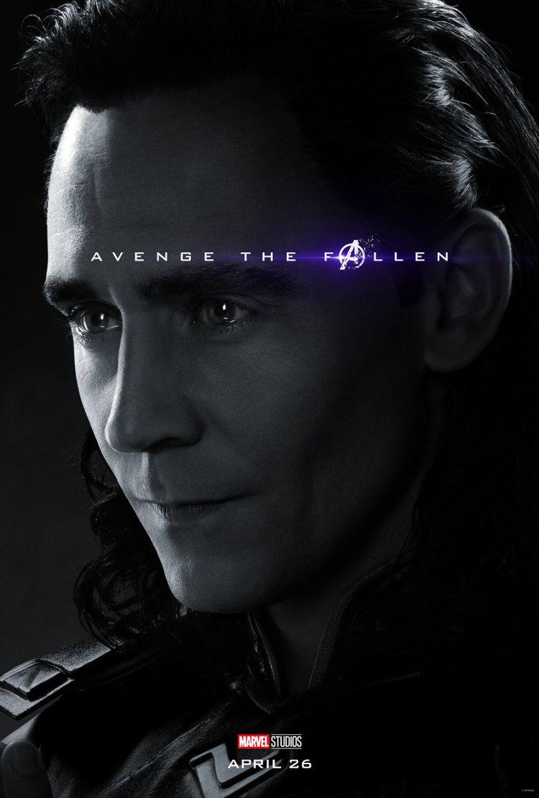

로키 라우페이슨(Loki Laufeyson)
----------------------------------------------------------------------
지구를 비롯한 아홉 왕국을 농간하는 장난의 신으로, 토르 트릴로지에서 핵심적인 존재.
아홉 세계중 하나인 요툰헤임의 왕 라우페이의 자식인 로키는 아스가르드의 오딘에게 발견되어 오딘의 아들로서 자랍니다.
오딘과 프리가 사이에서 자라던 로키는 형 토르를 동경함과 동시에 열등감을 느끼고 있었고, 그 열등감이 극에 달했을 때 자신의 출생의 비밀을 알게 됩니다.
결국 문제를 일으키고 아스가르드에서 떨어진 로키는 토르가 지내던 지구를 지배하고자 합니다...
이후 행적은 이곳에서